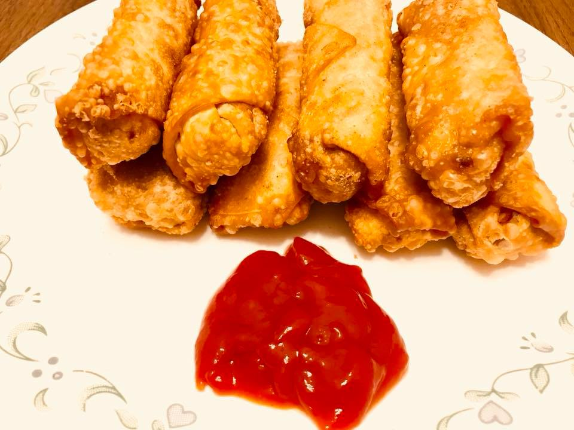

                                    <figure class="cards double">
                                        <figcaption class="caption">
                                            <h1><span style="color: #df840e;"><strong>Spring Rolls</strong></span></h1> 
                                            <p>&nbsp;<strong>Ingredients</strong></p><p>&nbsp;</p><ul><li>&nbsp;Spring Roll Sheets 20</li><li>&nbsp;&frac12; head of a small cabbage shredded</li><li>One carrot julienned</li><li>One red bell pepper julienned</li><li>&frac12; pound cremini mushroom cut into &frac12; inch pieces</li><li>Shredded ginger 1 tbsp</li><li>Shredded garlic 1 tbsp</li><li>Soya sauce 1 tbsp</li><li>Chilli sauce 1 tbsp</li><li>Oyster sauce 1 tbsp</li><li>Salt &frac12; tsp or as desired</li><li>Oil</li></ul><p>&nbsp;</p><p><strong>Method</strong></p><p>&nbsp;</p><p>Pour a tbsp of oil into a saucepan. Saut&eacute; the onion, shredded ginger and garlic, carrots, cabbage, mushrooms in that order, just for about a minute. Add all the sauces and salt. Let the veg mixture totally dry by stir frying on high heat so that they are still crisp and not soggy. Do not cover and cook.</p><p>Place the spring roll sheets on a clean and dry surface. Spread the vege&nbsp;mixture (one tbsp on each) on to the middle of the sheet, roll and close it at the tip with a paste made of water and flour. Keep the rolls covered as you roll them to prevent them from drying. Fry the rolls in a deep fryer. If using fry pan method, pour oil into a frying pan. Make sure you have about one inch of oil level in your frying pan. Fry the rolls and drain on paper towel.</p><p>&nbsp;</p>
                                        </figcaption>
                                       

                                    </figure>
                                   